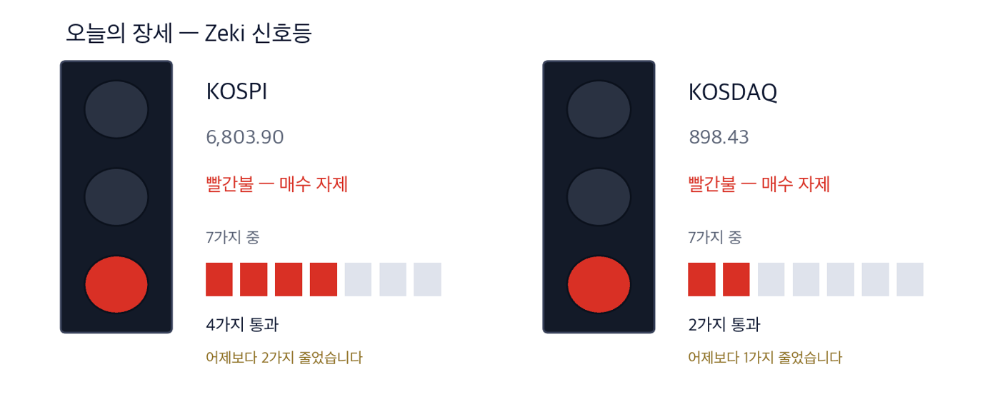

코스피 6,803.90 -1.98% | 코스닥 898.43 -2.34% | 제키 신호등 빨간불 |

초록불은 매수 우위, 노란불은 관망, 빨간불은 매수 자제입니다. 칸은 7가지 조건 중 몇 가지를 만족하는지이고, 많을수록 오르는 종목이 넓게 퍼져 있습니다. 7일 종가 기준 코스피는 7가지 가운데 4가지를 만족해 빨간불입니다. 코스닥은 7가지 가운데 2가지를 만족해 빨간불입니다. 코스피는 어제보다 2가지 줄었습니다. 코스닥은 어제보다 1가지 줄었습니다.
매수 자제 — 신호등이 뜻하는 자세입니다.
7일 서울 증시가 함께 내렸습니다. 코스피는 1.98% 내린 6,803.90에, 코스닥은 2.34% 내린 898.43에 마감했습니다. 코스닥은 하루 만에 900 아래로 내려왔습니다.
외국인이 유가증권시장에서 3조1095억원을 순매도했습니다. 기관도 8613억원을 팔았고, 개인이 3조2616억원을 사들였습니다. 최근 많이 오른 반도체주에 차익 매물이 몰렸습니다. (한국경제 10/8자)
삼성전자는 하루 5,000억원 넘게 사던 자사주 매입을 6일 마쳤습니다. 그래도 7일 낙폭은 코스피보다 작았습니다. 8일 3분기 잠정실적을 앞두고 사고파는 쪽 모두 기다린 것으로 풀이됩니다.
뉴욕에서는 6일 나스닥 종합이 0.45% 올라 27,600으로 마감했습니다. 장중 사상 최고치를 썼지만 그날 범위의 아래쪽에서 끝났습니다. S&P 500은 7,819, 다우는 51,521로 올랐습니다. 다만 SK하이닉스 미국주식예탁증서가 6.39% 내려 서울 반도체주는 장 초반부터 약했습니다. (IBD 10/6)
① 화장품주는 하락장에서 올랐습니다. 7일 아모레퍼시픽이 3.98%, 코스맥스가 3.50% 올랐습니다. 9월 화장품 수출이 처음 12억달러를 넘었습니다.
② 가온전선은 장중 사상 최고가를 쓴 뒤 7.25% 내려 마감했습니다. 이익보다 주가가 빨리 올랐다는 지적이 함께 나옵니다.
③ 8일 아침 삼성전자 실적이 나오고, 9일은 한글날로 쉽니다. 휴장 전 하루뿐이라 외국인 매도가 이어지는지가 중요합니다.
숫자 하나는 12억1300만달러입니다. 9월 한국 화장품 수출액으로, 1년 전보다 30% 늘었습니다. 한 달 수출이 12억달러를 넘은 것은 처음입니다. 미국 수출이 21%, 중국 수출이 9% 늘었습니다. (하나증권 집계, 매일경제 10/8자)
| 날짜 | 무엇을 보는가 | 시장에 어떤 영향 |
|---|---|---|
| 10월 8일(목) | 삼성전자 3분기 잠정실적 | 자사주 매입이 끝난 뒤 실적이 주가를 받칠 수 있는지 드러납니다. 메리츠증권은 영업이익을 106조1000억원으로 봅니다 |
| 10월 9일(금) | 한글날 휴장 | 서울은 쉬고 뉴욕은 엽니다. 이번 주 거래일이 8일로 끝납니다 |
| 10월 13일(화) | 애플 스마트홈 기기 공개, 미국 JP모간·골드만삭스 3분기 실적 | LG전자와 함께 만든 제품이 드러나고, 미국 대형 은행이 실적 발표를 엽니다 |
7일 지수가 2% 가까이 내린 날 화장품주는 함께 올랐습니다. 한국화장품제조가 11.9%, 코스메카코리아가 5.98% 올랐습니다. 브랜드 회사뿐 아니라 대신 만들어 주는 회사도 같이 올랐습니다.
이번 주에는 아마존 등 미국 대형 유통업체의 쇼핑 행사가 시작됩니다. 어도비는 10월 미국 온라인 소비가 958억달러로 1년 전보다 늘 것으로 봤습니다. (매일경제 10/8자)
| 종가 | 당일 | 한 주 | 20거래일 |
|---|---|---|---|
| 138,300원 | +3.98% | -2.67% | -3.49% |
| 3개월 | 제키 강도 | 고점 대비 |
|---|---|---|
| +14.11% | 68 | -18.17% |
| 누가 | 아모레퍼시픽, 설화수·라네즈 등을 파는 화장품 회사입니다. |
| 무엇을 | 7일 3.98% 올라 138,300원에 마감했습니다. 2월 9일 1년 최고가 169,000원보다 18.2% 낮습니다. |
| 언제 | 9월 화장품 수출 집계가 나온 뒤 7일에 올랐습니다. |
| 어디서 | 유가증권시장에 상장돼 있습니다. 하루 거래대금은 약 290억원입니다. |
| 왜 | 9월 수출이 미국에서 21%, 중국에서 9% 늘어 두 시장에서 함께 파는 회사에 기대가 붙었습니다. |
| 어떻게 | 7일 거래량은 50일 평균의 0.82배였습니다. 그날은 외국인 순매수, 기관 순매수였습니다. |
| 종가 | 당일 | 한 주 | 20거래일 |
|---|---|---|---|
| 310,500원 | +3.50% | +11.49% | +12.70% |
| 3개월 | 제키 강도 | 고점 대비 |
|---|---|---|
| +84.49% | 91 | -2.97% |
| 누가 | 코스맥스, 다른 회사의 화장품을 개발해 대신 만들어 주는 회사입니다. |
| 무엇을 | 7일 3.50% 올라 310,500원에 마감했습니다. 10월 7일 1년 최고가 320,000원보다 3.0% 낮습니다. |
| 언제 | 9월 화장품 수출 집계가 나온 뒤 7일에 올랐습니다. |
| 어디서 | 유가증권시장에 상장돼 있습니다. 하루 거래대금은 약 296억원입니다. |
| 왜 | 브랜드가 많이 팔수록 만드는 회사의 주문도 함께 늘기 때문입니다. |
| 어떻게 | 7일 거래량은 50일 평균의 1.52배였습니다. 그날은 외국인 순매도, 기관 순매수였습니다. |
가온전선의 장중 시가총액이 7일 10조원을 넘었습니다. 미국 자회사가 데이터센터 안에서 전력을 나누는 버스덕트와 중전압 케이블을 공급합니다. 상반기 버스덕트 매출 1,141억원은 지난해 전체 783억원을 이미 넘었습니다.
오후에는 인공지능 데이터센터 관련주에 차익 매물이 나와 내려 마감했습니다. 12개월 앞 이익 기준 주가수익비율은 46.7배입니다. 유안타증권은 내년 영업이익을 2,609억원으로 봤습니다. (한국경제 10/8자)
| 종가 | 당일 | 한 주 | 20거래일 |
|---|---|---|---|
| 307,000원 | -7.25% | -2.54% | +44.81% |
| 3개월 | 제키 강도 | 고점 대비 |
|---|---|---|
| +10.63% | 99 | -14.60% |
| 누가 | 가온전선, LS그룹의 전선 회사로 미국 자회사가 데이터센터 배전 설비를 공급합니다. |
| 무엇을 | 7일 7.25% 내려 307,000원에 마감했습니다. 10월 7일 1년 최고가 359,500원보다 14.6% 낮습니다. |
| 언제 | 7일 장중 사상 최고가를 썼고, 장중 시가총액이 10조원을 넘었습니다. |
| 어디서 | 유가증권시장에 상장돼 있습니다. 하루 거래대금은 약 936억원입니다. |
| 왜 | 인공지능 서버가 전기를 많이 써 데이터센터 안의 버스덕트와 중전압 케이블 주문이 늘기 때문입니다. |
| 어떻게 | 7일 거래량은 50일 평균의 1.93배였습니다. 그날은 외국인 순매도, 기관 순매도였습니다. |
식품의약품안전처가 7일 한미약품의 비만 치료제 「에페」 판매를 허가했습니다. 국내에서 개발한 첫 GLP-1 계열 비만약입니다. 한국인 448명을 대상으로 한 최종 임상에서 40주 동안 체중이 평균 9.75% 줄었습니다.
국내 시장은 마운자로와 위고비가 나눠 갖고 있습니다. 상반기 마운자로 국내 매출은 7,443억원입니다. 에페 가격은 월 20만원 안팎이 거론돼 두 약보다 낮습니다. (한국경제·매일경제 10/8자)
| 종가 | 당일 | 한 주 | 20거래일 |
|---|---|---|---|
| 534,000원 | +0.95% | +6.37% | +12.78% |
| 3개월 | 제키 강도 | 고점 대비 |
|---|---|---|
| +15.71% | 77 | -17.47% |
| 누가 | 한미약품, 첫 국산 GLP-1 계열 비만 치료제 「에페」를 개발한 제약사입니다. |
| 무엇을 | 7일 0.95% 올라 534,000원에 마감했습니다. 2월 24일 1년 최고가 647,000원보다 17.5% 낮습니다. |
| 언제 | 식품의약품안전처가 10월 7일 판매를 허가했고, 이르면 이달 말 나옵니다. |
| 어디서 | 유가증권시장에 상장돼 있습니다. 하루 거래대금은 약 534억원입니다. |
| 왜 | 마운자로와 위고비가 나눠 가진 국내 비만약 시장에 더 싼 국산 약이 들어가기 때문입니다. |
| 어떻게 | 7일 거래량은 50일 평균의 1.45배였습니다. 그날은 외국인 순매도, 기관 순매도였습니다. |
애플이 LG전자와 함께 비디오 초인종, 도어록, 보안 카메라 같은 스마트홈 기기를 만들고 있습니다. LG전자가 제조와 판매를 맡고, 애플은 13일 제품을 공개합니다.
값은 반대로 갔습니다. LG전자는 7일 10.30% 내렸습니다. 같은 날 낸 3분기 영업이익 7,818억원이 시장 기대에 못 미쳤기 때문입니다. 판매가 몇 달 뒤라 이익에 들어오는 시점도 멀어, 오늘은 종목으로 다루지 않습니다.
| 종목 | ①20거래일 상승 | ②강도 90↑ | ③외국인 순매수 | ④기관 순매수 | 충족 | 근거의 무게 |
|---|---|---|---|---|---|---|
| 아모레퍼시픽(090430) | X | X | X | O | 1/4 | 확인 필요 |
| 코스맥스(192820) | O | O | X | O | 3/4 | 근거 있음 |
| 가온전선(000500) | O | O | O | O | 4/4 | 근거 확실 |
| 한미약품(128940) | O | X | X | O | 2/4 | 확인 필요 |
네 칸은 ①20거래일 동안 올랐는가 ②제키 강도가 90 이상인가 ③외국인이 20거래일 순매수했는가 ④기관이 20거래일 순매수했는가입니다. O의 개수가 근거의 무게를 정합니다. 네 가지를 모두 넘은 곳은 가온전선입니다. 아모레퍼시픽·한미약품은 제키 강도가 90에 못 미칩니다. 20거래일 동안 외국인이 판 곳은 아모레퍼시픽·코스맥스·한미약품입니다.
| 종목 | 외국인 · 기관 20거래일 | 거래량 | 어떻게 읽나 |
|---|---|---|---|
| 한온시스템 018880 | 외 -7.8 · 기 +10.5 | 4.50배 | 주의 — 기관만 사고 다른 쪽은 팔았습니다 |
| SFA반도체 036540 | 외 +15.6 · 기 -5.6 | 2.08배 | 주의 — 외국인만 사고 다른 쪽은 팔았습니다 |
| 우리금융지주 316140 | 외 +19.6 · 기 +2.0 | 1.08배 | 확인✓ — 함께 샀지만 거래가 얕습니다 |
| 대한광통신 010170 | 외 +3.0 · 기 +0.8 | 0.93배 | 확인✓ — 함께 샀지만 거래가 얕습니다 |
| 대한항공 003490 | 외 +7.1 · 기 +0.6 | 0.70배 | 확인✓ — 함께 샀지만 거래가 얕습니다 |
| 삼성중공업 010140 | 외 -7.6 · 기 -1.6 | 0.81배 | 관망 — 둘 다 팔지만 거래가 말랐습니다 |
| 두산에너빌리티 034020 | 외 -7.1 · 기 -1.0 | 0.73배 | 관망 — 둘 다 팔지만 거래가 말랐습니다 |
| 대우건설 047040 | 외 -4.7 · 기 -3.4 | 0.62배 | 관망 — 둘 다 팔지만 거래가 말랐습니다 |
| LG디스플레이 034220 | 외 -8.5 · 기 -1.5 | 0.57배 | 관망 — 둘 다 팔지만 거래가 말랐습니다 |
| 넷마블 251270 | 외 -11.1 · 기 -0.2 | 0.46배 | 관망 — 둘 다 팔지만 거래가 말랐습니다 |
| 종목 | 20일 동안 더 산 양(주) | Zeki 강도 | 20거래일 등락 | 기준일 |
|---|---|---|---|---|
| 우리금융지주 316140 | +19,566,704 | 70 | +0.6% | 10-07 |
| SFA반도체 036540 | +15,606,321 | 96 | +102.7% | 10-07 |
| 대한항공 003490 | +7,114,747 | 78 | +1.5% | 10-07 |
| 고영 098460 | +3,778,880 | 88 | +28.5% | 10-07 |
| 대한광통신 010170 | +3,021,957 | 99 | +36.2% | 10-07 |
| 종목 | 20일 동안 더 산 양(주) | Zeki 강도 | 20거래일 등락 | 기준일 |
|---|---|---|---|---|
| 삼성전자 005930 | -20,648,802 | 93 | +5.3% | 10-07 |
| 넷마블 251270 | -11,089,037 | 13 | -5.1% | 10-07 |
| LG디스플레이 034220 | -8,525,712 | 10 | -9.5% | 10-07 |
| SK하이닉스 000660 | -7,939,489 | 96 | +4.1% | 10-07 |
| 한온시스템 018880 | -7,835,264 | 69 | +9.5% | 10-07 |
| 종목 | 20일 동안 더 산 양(주) | Zeki 강도 | 20거래일 등락 | 기준일 |
|---|---|---|---|---|
| 삼성전자 005930 | +12,912,550 | 93 | +5.3% | 10-07 |
| 한온시스템 018880 | +10,503,249 | 69 | +9.5% | 10-07 |
| 맥쿼리인프라 088980 | +4,831,696 | 36 | -1.4% | 10-07 |
| 팬오션 028670 | +2,499,720 | 84 | +4.0% | 10-07 |
| 파두 440110 | +2,354,965 | 96 | +21.7% | 10-07 |
| 종목 | 20일 동안 더 산 양(주) | Zeki 강도 | 20거래일 등락 | 기준일 |
|---|---|---|---|---|
| SFA반도체 036540 | -5,616,150 | 96 | +102.7% | 10-07 |
| 대우건설 047040 | -3,350,733 | 96 | +2.2% | 10-07 |
| 고영 098460 | -2,181,938 | 88 | +28.5% | 10-07 |
| NAVER 035420 | -2,117,288 | 31 | -11.9% | 10-07 |
| 와이씨 232140 | -2,032,771 | 80 | +44.0% | 10-07 |
기사와 값이 맞아도 자금은 따로 봅니다. 아래 표는 7일 거래량이 넘어야 할 거래량(50일 평균)을 실제로 넘었는지를 답합니다.
| 종목 | 넘었나 | 수급(기준일) | 어떻게 읽나 |
|---|---|---|---|
| 아모레퍼시픽(090430) | 0.82배 ✗ | 외 매수 · 기 매수 (10/7) | 확인 — 함께 샀지만 거래가 얕습니다 |
| 코스맥스(192820) | 1.52배 ✓ | 외 매도 · 기 매수 (10/7) | 주의 — 기관만 사고 다른 쪽은 팔았습니다 |
| 가온전선(000500) | 1.93배 ✓ | 외 매도 · 기 매도 (10/7) | 주의 — 둘 다 파는데 물량이 늘었습니다 |
| 한미약품(128940) | 1.45배 ✓ | 외 매도 · 기 매도 (10/7) | 주의 — 둘 다 파는데 물량이 늘었습니다 |
「넘었나」는 7일 거래량을 50일 평균으로 나눈 값이며, 1배를 넘으면 ✓입니다. 4종목 가운데 3종목이 7일 평소보다 많이 거래됐습니다.
| 근거의 무게 | 종목 | KOSPI를 이긴 수 | 지수를 웃돈 폭 | 지수를 밑돈 폭 | 전부 평균 |
|---|---|---|---|---|---|
| 근거 확실 | 16 | 13 / 16 | +8.84%p | -4.35%p | +6.37%p |
| 근거 있음 | 16 | 8 / 16 | +6.66%p | -5.58%p | +0.54%p |
| 확인 필요 | 35 | 11 / 35 | +7.04%p | -4.16%p | -0.64%p |
| 근거 약함 | 1 | 1 / 1 | +7.22%p | 없음 | +7.22%p |
| 근거 없음 | 2 | 0 / 2 | 없음 | -5.15%p | -5.15%p |
| 테마 제외 | 1 | 1 / 1 | +4.53%p | 없음 | +4.53%p |
| 근거 확실 16 | +6.37%p | ||||||
| 근거 있음 16 | +0.54%p | ||||||
| 확인 필요 35 | −0.64%p | ||||||
| 근거 약함 1 | +7.22%p | ||||||
| 근거 없음 2 | −5.15%p | ||||||
| 테마 제외 1 | +4.53%p |
가운데 선이 KOSPI입니다. 오른쪽이 웃돈 것, 왼쪽이 밑돈 것입니다. 이름 옆 회색 숫자는 그 칸의 종목 수입니다.
근거 확실 16종목 가운데 13종목이 KOSPI를 이겼습니다. 이긴 13종목은 평균 8.8%p 웃돌았고, 진 3종목은 평균 4.4%p 밑돌았습니다. 전부 합치면 지수보다 +6.4%p 입니다.
20거래일(약 한 달) 뒤 결과는 10월 14일에 처음 나오고, 차는 대로 이 자리에 표로 더해집니다.
60거래일(약 3개월) 뒤 결과는 12월 9일에 처음 나오고, 차는 대로 이 자리에 표로 더해집니다.
판정. 두 시장 합쳐 60건이 찬 기간마다 미리 정해 둔 방식으로 판정해 그대로 싣습니다. 5거래일 161건 — 지수보다 낫다고 할 수 없습니다. 다만 근거 등급이 높은 종목이 성적도 좋았습니다. (48.4%가 지수를 이겼습니다) · 20거래일 0건 / 필요 60건 · 60거래일 0건 / 필요 60건
| 언제 | 무엇을 보는가 | 무엇을 뜻하는가 |
|---|---|---|
| 개장 30분(09:00~09:30) | 아모레퍼시픽·코스맥스가 7일 종가 위에서 출발하는가 | 하락장에서 오른 업종에 돈이 이어 붙는지 보여 줍니다 |
| 장중 | 삼성전자 실적 발표 뒤 외국인이 유가증권시장 매도를 줄이는가 | 7일의 외국인 대량 매도가 하루로 끝나는지 보여 줍니다 |
| 마감 30분(15:00~15:30) | 코스닥이 900 위에서 마치는가 | 휴장 전 마지막 거래일에 900선을 되찾는지 보여 줍니다 |
8일 하루 거래하고 9일은 한글날로 쉽니다. 8일 아침 삼성전자 3분기 잠정실적이 나옵니다. 13일에는 애플의 스마트홈 기기 공개와 미국 대형 은행 실적이 이어집니다.
This is the Rex Way, ZekiRex™